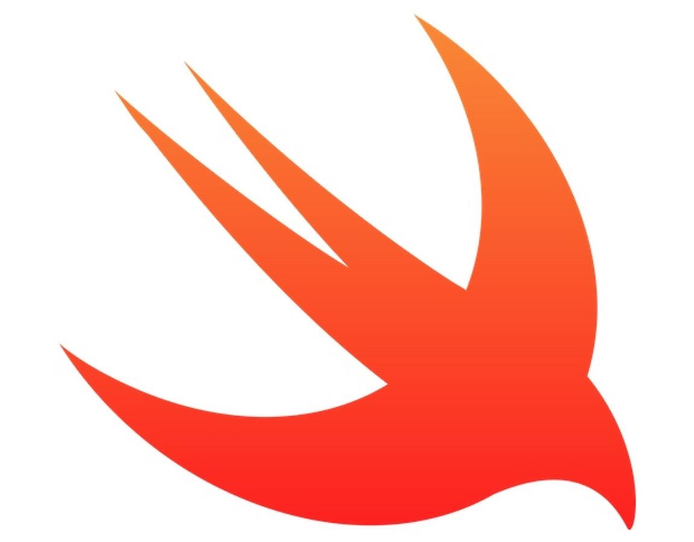
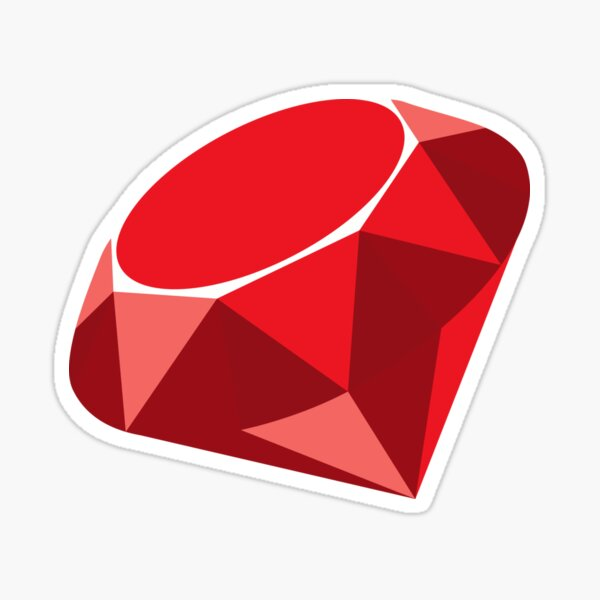

Enlaces a las paginas oficiales en las imagenes (click para ir a la pagina web)
Java es un lenguaje desarrollado por Sun Microsystems en 1995 conocido por su enfoque orientado a objectos y por correr MinecraftC es uno de los lenguajes mas populares actualmente, desarrollado hace alrededor de 40 años que ofrece un control a medio y bajo nivelActualmente el lenguaje mas popular en existencia, Python es un lenguaje de alto nivel destacado por su sintaxis limpia y amplio soporte de librerias, relevant xkcdC# (Pronunciado C sharp) es un la respuesta de Microsoft ante Java, este es un lenguaje enfocado a las plataformas de Microsoft que ofrece diferentes herramientas para su diseño (destacando las interfaces graficas)El sucesor de C, este introduce varios elementos propios de un lenguaje de alto nivel, manteniendo al mismo tiempo compatibilidad con su predecesorEste es el sucesor de Visual Basic, que en su momento fue el intento de Microsoft de generar un lenguaje accesible para un mayor publico, sin embargo esta bien feo nmmsHoy en dia este lenguaje permea casi todas las paginas web, mientras su nombre parece indicar una relación con Java, comparar estos lenguajes es como comparar un coco con un cocodriloAntaño PHP era uno de los lenguajes principales para el desarrollo backend, su falta de tipado y errores como T_PAAMAYIM_NEKUDOTAYIM causó la ira y dolor de varios desarrolladoresEw, AppleLa oveja negra de la lista, SQL estrictamente no puede considerarse un lenguaje de programacion, sin embargo eso no quita su papel instrumental en el manejo de bases de datos relacionales, y por extension, el desarrollo backendUna vez escuche que Facebook usaba Ruby, Facebook tambien usaba PHP, no seas como Facebook